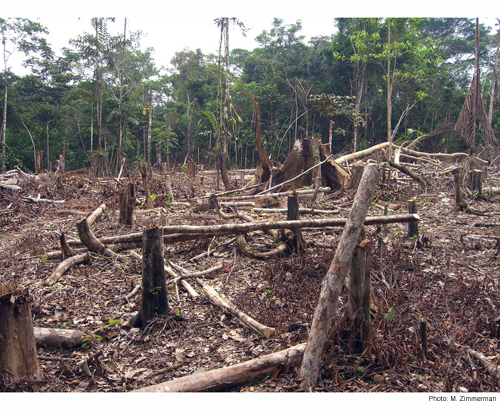

Time Series Forecast
In the environmental sciences, we don’t always want to understand current and past processes, sometimes we want to look into the future. For example, we may want to project how long it will take an endangered species to become extinct if threats continue. We may also want to project how populations or distributions will respond to continuing anthropogenic climate change. Predicting the future, or forecasting has the been the focus of a great deal of statistical research in the field of economics and we can apply the same techniques to ecological questions. Here we will focus on time-series forecasting, where we will use historical data collected over time to predict conditions in the future. We will use Rob Hyndman’s forecast R-package.
library(forecast)###Simple exponential smoothing models

Our first example will use annual rainforest loss (ha) in the in the Tocantins region of the Brazilian Amazon collected by satellite imagery over 25 years (data from Global Forest Watch and analysed in further detail in Virah-Sawmy et al. 2015).
We will enter the data manually.
Area <- c(1650,730,580,440,409,333,333,797,320,273,576,216,244,189,212,
156,158,271,124,63,107,61,49,40,52)
Year <- c(1988:2012)First, we use the ts function to create a time series object in R, specifying the data, the start and end times, and the frequency (in this case, one year).
Area_loss <- ts(Area, start = 1988, end = 2012, frequency = 1)
Area_loss## Time Series:
## Start = 1988
## End = 2012
## Frequency = 1
## [1] 1650 730 580 440 409 333 333 797 320 273 576 216 244 189 212
## [16] 156 158 271 124 63 107 61 49 40 52We can then split the data into training and test data using the window function. In this example, we will try to forecast rainforest loss for the last three years in the time series (2010-2012). These three years will be the test data, and the previous years the training data. In this way, we will be able to check our forecasted values against real observations.
Area_loss_train <- window(Area_loss, start = 1988, end = 2009, frequency = 1)
Area_loss_test <- window(Area_loss, start = 2010, end = 2012, frequency = 1)Now that we have formatted our data appropriately, we will fit a simple exponential smoothing model using the ets function. This model uses a weighted average of past observations, with the weights decreasing exponentially into the past. This means that the most recent observations get the highest weight and therefore influence the predictions the most.
In the ets function, the model type is expressed as a three-character code representing the error type (first character), the trend type (second character) and the season type (third character). We will use the model type = ANN which is a simple exponential smoothing model with additive errors (A), no assumed trend (N) and no seasonality (N).
fit1 <- ets(Area_loss_train, model = "ANN") Now that we have fit the model using our training data (1988-2009), we can use the model to predict rainforest loss in the most recent 3 years (2010-2012), specifying h as the number of time points that we want to forecast (in this case 3 years).
fit1_forecast <- forecast(fit1, h = 3)
fit1_forecast## Point Forecast Lo 80 Hi 80 Lo 95 Hi 95
## 2010 70.79069 -287.8400 429.4214 -477.6876 619.2690
## 2011 70.79069 -379.4406 521.0220 -617.7786 759.3600
## 2012 70.79069 -455.3275 596.9089 -733.8377 875.4191The output of our forecast gives us the forecasted values (Forecast) for each year (Point) and then the 80% and 95% confidence intervals. How did we do? By using the plot function on a forecast object, we can see a plot of the historical trend (line), with our forecast observations (blue points) and our confidence intervales (95% - grey shading, 80% - blue shading).
plot(fit1_forecast) 
In this case, we already have historical data for our predicted points, so we will plot them on top using the points function (black squares), selecting the last three values in the Year and Area vectors (23:25).
plot(fit1_forecast)
points(Year[23:25], Area[23:25], lty = 1, col = "black", lwd = 3, pch = 0)
legend("topright", legend = c("observed", "forecasted"), lwd = 3,
col = c("black","blue"), lty = c(0,0), merge = TRUE,
bty = "n", pch = c(0,19), cex = 1.3)
The value for alpha (the smoothing parameter) was estimated to be 0.7587, which means a relatively fast decay of observation weights into the past. In other words, the past observations have a relatively small influence on future predictions.
From our figure we see a strong downward trend, so we could add an additive trend in the model. This is simply done by changing the second character in our model code to “A” (additive) and repeating the process.
fit2 <- ets(Area_loss_train, model = "AAN")
fit2_forecast <- forecast(fit2, h = 3)We can compare the simple exponential model with the model incorporating the additive trend by plotting them side by side.
par(mfrow = c(1,2))
plot(fit1_forecast,main="Simple exponential model")
points(Year[23:25], Area[23:25], lty = 1, col = "black", lwd = 4, pch = 0)
plot(fit2_forecast, main="Additive trend model")
points(Year[23:25], Area[23:25], lty = 1, col = "black", lwd = 4, pch = 0)
legend("topright", legend = c("observed", "forecasted"), lwd = 4,
col = c("black","blue"), lty = c(0,0), merge = TRUE,
bty = "n", pch=c(0,19), cex = 1.3)
Which model do you think performs better? Another option is to fit all possible models and select the best model using AIC. This is done simply by not specifying any model structure in the ets command.
fit3 <- ets(Area_loss_train)
fit3_forecast <- forecast(fit3, h = 3)
fit3$method## [1] "ETS(M,N,N)"If you are interested in which model structure was selected you can extract it from the model object fit_3$method. In this case, the model structure was MNN: a model with multiplicative errors (M), but no overall trend (N) or seasonality (N) assumed. Now we can plot all three models to see which is giving us the best approximation of our observed measurements of rainforest loss.
par(mfrow = c(1,3))
plot(fit1_forecast, main="Simple exponential model")
plot(fit2_forecast, main="Additive trend model")
plot(fit3_forecast, main="Best model (lowest AIC)")
points(Year[23:25], Area[23:25], lty = 1, col = "black", lwd = 4, pch = 0)
legend("topright", legend = c("observed", "forecasted"), lwd = 4,
col = c("black","blue"), lty = c(0,0), merge = TRUE,
bty = "n", pch = c(0,19), cex = 1.3)
We can also predict future rainforest loss (so no test data). Let’s keep the prediction at three years but include all of our historical observations in the training data. We will again use the AIC model selection method.
Area_loss_train_2 <- window(Area_loss, start = 1988, end = 2012, frequency = 1)
fit4 <- ets(Area_loss_train_2)
fit4_forecast <- forecast(fit4, h = 3)
par(mfrow = c(1,1))
plot(fit4_forecast)
Bad news! The forecast is for decreasing rainforest area in the Amazon.
###Models incorporating seasonal variability
Let’s try another example that incorporates not only long-term trends but also seasonal variability. We will use an example used in Rob Hyndman and George Athanasopoulos’ online textbook and included in the forecast package: Australian monthly gas production. We will start by plotting the historical data from 1956 to 1995. If we plot the data, we can see two patterns: an overall positive trend and a zig-zagging seasonal pattern.
data(gas)
plot(gas)
If we use our first model, the simple exponential model that doesn’t assume a trend or seasonality (ANN), we get the following when we are predicting the next 3 years. Note that h is now 36 time points (= 3 years x 12 months).
fit_gas1 <- ets(gas, model = "ANN")
fit_gas1_forecast <- forecast(fit_gas1, h = 36)
plot(fit_gas1_forecast, main="Simple exponential model") 
As expected, we can see that the model does a pretty poor job of predicting the overall trend or the seasonal variability. In fact the model predicts constant gas production over the 3 years (or 36 monthly time steps).
Now let’s fit the model assuming additive seasonal varibility (ANA).
fit_gas2 <- ets(gas, model = "ANA")
fit_gas2_forecast <- forecast(fit_gas2, h = 36)
par(mfrow = c(1,2))
plot(fit_gas1_forecast, main="Simple exponential model")
plot(fit_gas2_forecast, main="Seasonal trend model") 
This model looks a lot more convincing that the simple exponential fit. Finally, let’s let the ets function choose the best model using AIC.
fit_gas3 <- ets(gas)
fit_gas3_forecast <- forecast(fit_gas3, h = 36)
par(mfrow = c(1,3))
plot(fit_gas1_forecast, main="Simple exponential model")
plot(fit_gas2_forecast, main="Seasonal trend model")
plot(fit_gas3_forecast, main="Best model (lowest AIC)")
###Further help
Type ?forecast for the R help with the package forecast.
For more details on the package and time-series forecasting in general, see Rob Hyndman and George Athanasopoulos’ online textbook. This script is based on the Ecostats Research Blog post and BEES R User group meeting workshop by Jakub Stoklosa.
Author: Jakub Stoklosa & Rachel V. Blakey
Last updated:
## [1] "Mon Jan 24 13:20:48 2022"